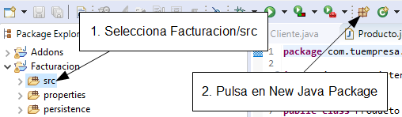
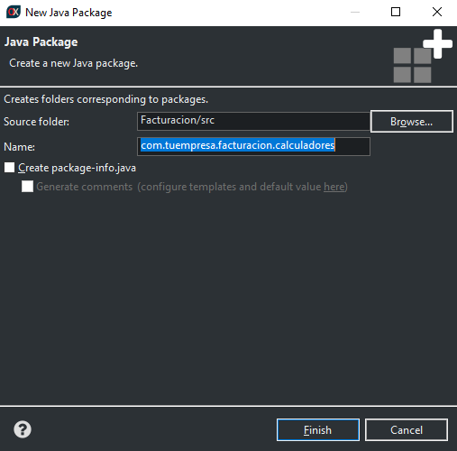

Si no te gustan los videos sigue
las instrucciones a continuación.
Calcular
valores por defecto
Vamos a escribir nuestra entidad
Factura con año, número y fecha.
Estaría bien tener valores por defecto para estas propiedades, para que el
usuario no tuviera que teclearlos. Esto es fácil de conseguir usando la
anotación
@DefaultValueCalculator. En esta primera versión de
Factura
puedes ver como definimos valores por defecto para
anyo y
fecha:
package com.tuempresa.facturacion.modelo;
import java.time.*;
import javax.persistence.*;
import org.hibernate.annotations.GenericGenerator;
import org.openxava.annotations.*;
import org.openxava.calculators.*;
import lombok.*;
@Entity @Getter @Setter
public class Factura {
@Id
@GeneratedValue(generator="system-uuid")
@Hidden
@GenericGenerator(name="system-uuid", strategy="uuid")
@Column(length=32)
String oid;
@Column(length=4)
@DefaultValueCalculator(CurrentYearCalculator.class) // Año actual
int anyo;
@Column(length=6)
int numero;
@Required
@DefaultValueCalculator(CurrentLocalDateCalculator.class) // Fecha actual
LocalDate fecha;
@Stereotype("MEMO")
String observaciones;
}
Así cuando el usuario pulse en el
botón
Nuevo el campo para año será el año actual, y el campo para
la fecha la fecha actual. Estos dos calculadores (
CurrentYearCalculator
y
CurrentLocalDateCalculator) están incluidos en OpenXava.
Explora el paquete
org.openxava.calculators
para ver otros calculadores predefinidos que pueden serte útiles.
Fíjate
que para la fecha usamos el tipo LocalDate (del paquete java.time).
Java tiene un tipo Date (en el paquete java.util). Sin
embargo Date no es una fecha, sino un momento en el tiempo,
incluyendo horas, segundo y milisegundos, mientras que LocalDate
tiene simplemente día, mes y año, es decir una fecha. Para el caso de la
factura, y para la mayoría en aplicaciones de gestión, usaremos LocalDate
en lugar de Date.
A veces necesitas tu propia lógica
para calcular el valor por defecto. Por ejemplo, para numero
queremos sumar uno al último número de factura dentro de este mismo año.
Crear tu propio calculador con tu lógica es fácil. Primero, crea un
paquete com.tuempresa.facturacion.calculadores para los
calculadores.
Para crear un paquete nuevo
selecciona la carpeta Facturacion/src y pulsa en el botón New
Java Package:

Se mostrará un diálogo donde
introducir el nombre del paquete, com.tuempresa.facturacion.calculadores,
y pulsa Finish:

Las paquetes son la forma que
tiene Java de organizar el código. Deberías cambiar com.tuempresa
por el dominio de tu organización, es decir si trabajas para Telefónica
el paquete para los calculadores debería ser es.telefonica.facturacion.calculadores.
Ahora crea en él una clase
CalculadorSiguienteNumeroParaAnyo,
con el siguiente código:
package com.tuempresa.facturacion.calculadores;
import javax.persistence.*;
import org.openxava.calculators.*;
import org.openxava.jpa.*;
import lombok.*;
public class CalculadorSiguienteNumeroParaAnyo
implements ICalculator { // Un calculador tiene que implementar ICalculator
@Getter @Setter
int anyo; // Este valor se inyectará antes de calcular
public Object calculate() throws Exception { // Hace el cálculo
Query query = XPersistence.getManager() // Una consulta JPA
.createQuery("select max(f.numero) from Factura f where f.anyo = :anyo"); // La consulta devuelve
// el número de factura máximo del año indicado
query.setParameter("anyo", anyo); // Ponemos el año inyectado como parámetro de la consulta
Integer ultimoNumero = (Integer) query.getSingleResult();
return ultimoNumero == null ? 1 : ultimoNumero + 1; // Devuelve el último número
// de factura del año + 1 o 1 si no hay último número
}
}
Tu calculador tiene que
implementar
ICalculator (y por lo tanto tener un método
calculate()).
Declaramos una propiedad
anyo para poner en ella el año del
cálculo. Para implementar la lógica usamos una consulta JPA. Repásate el
apéndice B sobre JPA. Ahora
sólo queda anotar la propiedad
numero en la entidad
Factura:
@Column(length=6)
@DefaultValueCalculator(value=CalculadorSiguienteNumeroParaAnyo.class,
properties=@PropertyValue(name="anyo") // Para inyectar el valor de anyo de Factura
// en el calculador antes de llamar a calculate()
)
int numero;
En este caso ves algo nuevo,
@PropertyValue.
Usándolo, estás diciendo que el valor de la propiedad
anyo en la
Factura actual se moverá a la propiedad
anyo del
calculador antes de hacer el cálculo. Ahora cuando el usuario pulse en
Nuevo
el siguiente número de factura disponible para este año estará en el
campo. La forma de calcular el número de factura no es la mejor para
muchos usuarios concurrentes añadiendo facturas. No te preocupes, lo
mejoraremos más adelante.
El efecto visual del calculador para valor por defecto es este:

Los valores por defecto son solo los valores iniciales, el usuario los
puede cambiar si así lo desea.
Fíjate como
anyo y
numero
no son clave, en su lugar usamos una propiedad
oid como clave
(anotada con
@Id). Generalmente usar claves simples es mejor, sin
embargo
usar
claves compuesta también es posible.
Referencias
convencionales (ManyToOne)
Ahora que tenemos todas las propiedades atómicas listas para usar, es
tiempo de añadir relaciones con otras entidades. Empezaremos añadiendo una
referencia desde
Factura a
Cliente, porque una factura
sin cliente no parece demasiado útil. Antes de añadir el cliente
usa
el módulo Factura para borrar todas las facturas existentes,
porque vamos a hacer el cliente obligatorio y esto podría fallar con los
datos existentes.
Añade el siguiente código a la entidad
Factura:
@ManyToOne(fetch=FetchType.LAZY, optional=false) // El cliente es obligatorio
Cliente cliente;
No hace falta más. El módulo
Factura
es así:

No hay más trabajo que hacer aquí. Añadamos una colección de líneas de
detalle a
Factura.
Colección
de objectos dependientes
Usualmente una factura necesita tener varias líneas con productos,
cantidades, etc. Estos detalles son parte de la factura, no son
compartidos por otras facturas y cuando una factura se borra sus líneas de
detalle son borradas con ella. Por tanto, la forma más natural de modelar
los detalles de una factura es usando objetos incrustados. Para hacerlo
con JPA declara una colección convencional en
Factura y anótala
con
@ElementCollection:
@ElementCollection
Collection<Detalle> detalles;
Usando
@ElementCollection cuando la factura se borra sus líneas se
borran también. Los detalles no se guardan en la base de datos hasta que
la factura se guarde y se guardan todos al mismo tiempo.
Para que esta colección funcione necesitas escribir la clase Detalle:
package com.tuempresa.facturacion.modelo;
import javax.persistence.*;
import lombok.*;
@Embeddable @Getter @Setter
public class Detalle {
int cantidad;
@ManyToOne(fetch = FetchType.LAZY, optional = true)
Producto producto;
}
Fíjate que está anotada con
@Embeddable
no con
@Entity, no puedes definir una
@ElementCollection
de entidades. Esta clase incrustable puede contener propiedades y
referencias, pero no colecciones.
De momento solo tenemos
cantidad y
producto, pero es
suficiente para tener la
Factura funcionando con
detalles.
El usuario puede añadir, editar y borrar elementos de la colección como en
una hoja de cálculo:

Este pantallazo enfatiza el hecho de que las propiedades a mostrar por
defecto son las propiedades planas, es decir, las propiedades de las
referencias no se incluyen por defecto. Esto produce una interfaz de
usuario fea para nuestra colección de líneas de factura en nuestro caso,
porque solo se muestra la propiedad
cantidad. Puedes arreglarlo
usando
@ListProperties, así:
@ElementCollection
@ListProperties("producto.numero, producto.descripcion, cantidad")
Collection<Detalle> detalles;
Como
puedes ver, solo has de poner como valor para @ListProperties
la lista de la propiedades que quieres separadas por comas. Puedes usar
propiedades calificadas, es decir, usar la notación del punto para
acceder a las propiedades de referencias, tal como producto.numero
y producto.descripcion en este caso. El resultado visual es:

Resumen
¡Enhorabuena! Has finalizado tus clases del modelo del dominio y tienes
una aplicación funcionando. Tus usuarios pueden trabajar con productos,
categorías, clientes e incluso crear facturas. En el caso de los
productos, categorías y clientes la interfaz de usuario está bastante
bien, aunque para
Factura todavía se puede mejorar un poco. Ya has
usado algunas anotaciones OpenXava para refinar la presentación, como
@DescriptionsList,
@NoFrame y
@ListProperties. En la siguiente lección usaremos
más anotaciones de este tipo para dar a la interfaz de usuario de
Factura
un mejor aspecto sin demasiado esfuerzo.